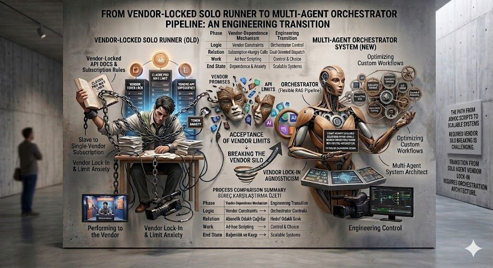

Breaking Vendor Silos and Evolving Ad-hoc Scripting into Scalable Orchestration Architecture

Eliminate the catastrophic risk of vendor shutdown or sudden pricing spikes. By owning the orchestrator, you retain the ability to swap backend models in real-time without user disruption.
Not every task requires a massive, expensive model. The orchestrator routes simple requests to lightweight models and complex reasoning to "frontier" models, optimizing for both speed and cost.
Instead of one "God Script" trying to do everything, deploy specialized agents for data extraction, verification, reporting, and notification. Each module is independently testable and upgradable.
Gain the freedom to build proprietary IP on top of an open-standard orchestration layer. Stop being a consumer of AI and start being a producer of AI-driven value.
Transition your enterprise from ad-hoc scripting to a professional multi-agent orchestration architecture. Build systems that scale with your vision, not your vendor's limits.